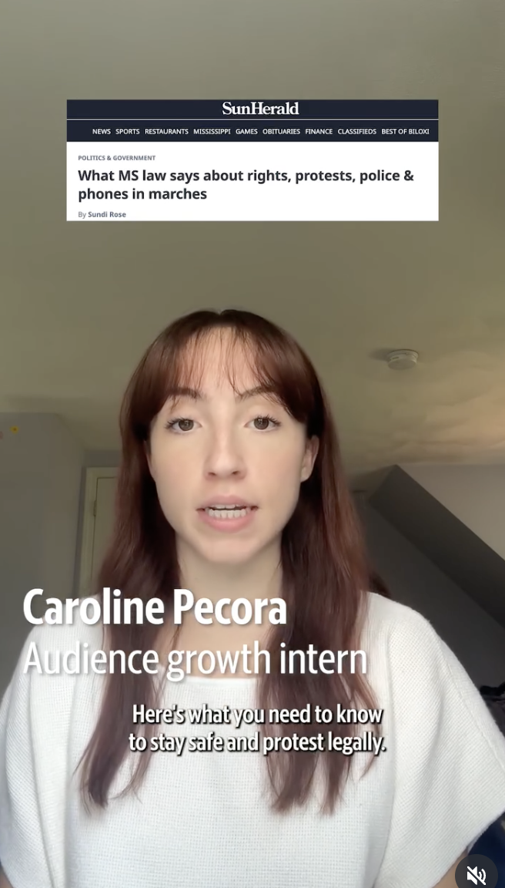
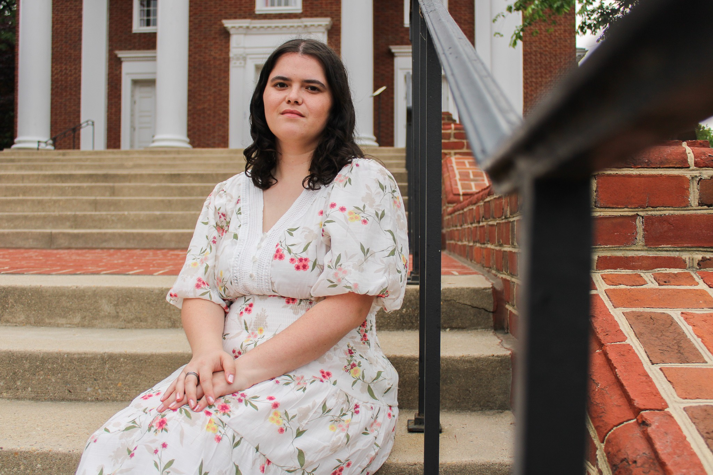

Social Media · Sun Herald

Social Media · Sun Herald
Social Media · The Diamondback

Reporting · Capital News Service
Hi! I'm Caroline Pecora, a journalist and digital storyteller passionate about the intersection of journalism, technology and audience engagement. I'm a graduate of the University of Maryland, where I studied Multiplatform Journalism. Originally from just north of Boston, I'm now based in New York City.
I'm interested in finding new ways to make meaningful reporting accessible, engaging and relevant to audiences wherever they consume news. My experience spans social media strategy, audience development, SEO, digital publishing and short-form video production.
I've worked with a wide array of newsrooms to grow their digital audiences, develop social media strategies and produce content for social platforms. I enjoy experimenting with new ways to tell stories and helping good journalism reach more people.